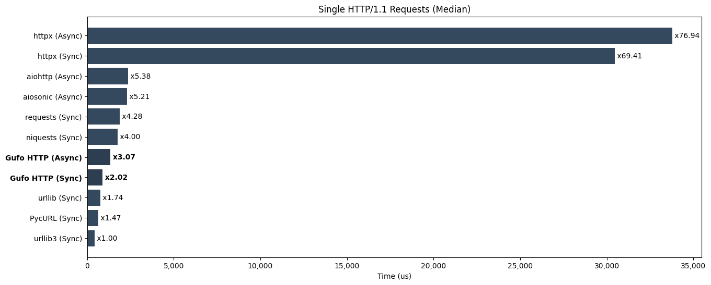
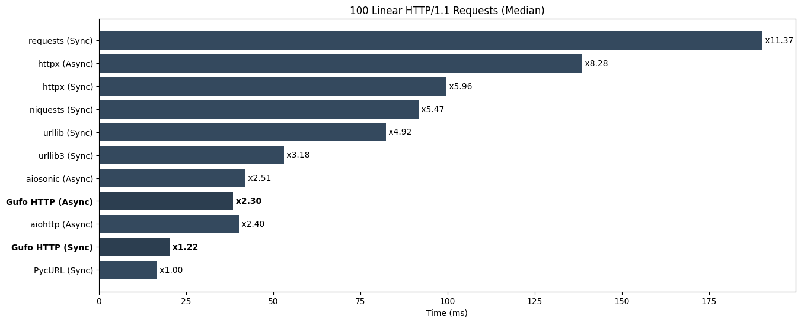
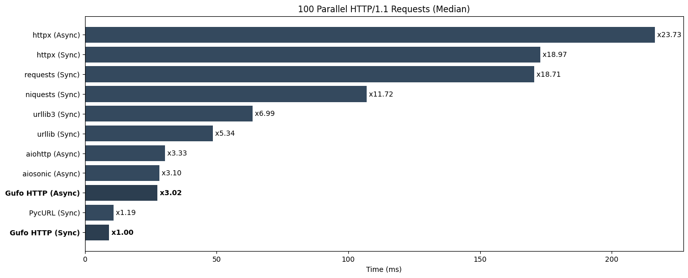
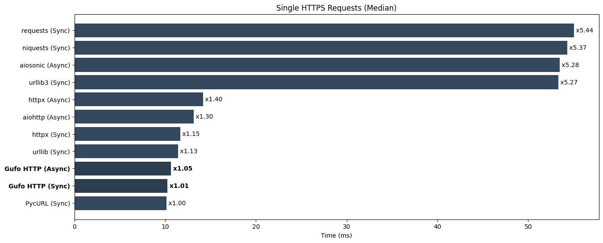
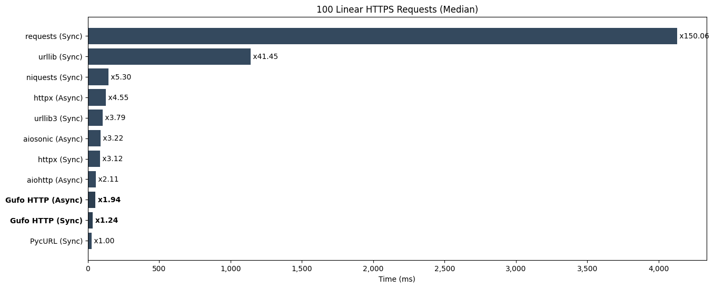
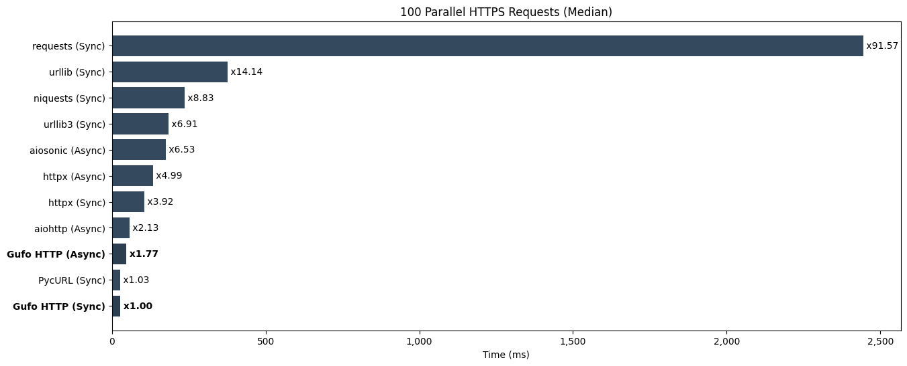

Python HTTP Clients Benchmark¶
Disclaimer
All following information is provided only for reference. These tests are performed by Gufo Labs to estimate the performance of Gufo HTTP against major competitors, so they cannot be considered independent and unbiased.
Note
Although performance is an absolute requirement for Gufo Stack, other factors such as maturity, community, features, examples, and existing code base should also be considered.
Abstract¶
This benchmark evaluates several Python HTTP client libraries:
- Gufo HTTP (current version)
- aiohttp (3.9.3)
- aiosonic (0.18.0)
- httpx (0.27)
- requests (2.31.0)
- niquests (3.5.2)
- PycURL (7.45.3)
- urllib from Python standard library
- urllib3 (2.2.1)
The evaluation covers the following aspects:
- Performance in synchronous (blocking) mode, if supported.
- Performance in asynchronous (non-blocking) mode, if supported.
- Performance in plain-text (HTTP) and encrypted (HTTPS) modes.
- Ability to maintain pools of connections.
- The efficiency of the resolver.
- Ability to release GIL in multi-threaded applications.
All benchmarks are performed against a local nginx installation
using wrapper, provided by gufo.http.httpd.
The benchmarking environment utilizes an AWS EC2 t2.xlarge (64-bit) instance running Debian 12. Median values are used for benchmark ranking.
Preparing¶
Start clear AWS EC2 t2.xlarge (64 bit) instance with Debian 12.
Prepare node:
sudo apt-get update
sudo apt-get install --yes git python3.11-venv
python3 -m venv bench
cd bench
. bin/activate
Clone repo:
Install local nginx:
Install test dependencies:
Install third-party packages to bench:
HTTP/1.1 Requests¶
Single Requests¶
Perform http requests to read 1kb text file. This test evaluates:
- The cost of client's initialization.
- The efficiency of the network code.
- The efficiency of the resolver.
- The efficiency HTTP/1.1 parser.
Run tests:
Results (lower is better)
================================================================= test session starts =================================================================
platform linux -- Python 3.11.2, pytest-7.4.3, pluggy-1.4.0
benchmark: 4.0.0 (defaults: timer=time.perf_counter disable_gc=False min_rounds=5 min_time=0.000005 max_time=1.0 calibration_precision=10 warmup=False warmup_iterations=100000)
rootdir: /home/admin/bench/gufo_http
plugins: anyio-4.3.0, benchmark-4.0.0
collected 11 items
benchmarks/test_single_x100_1k.py ........... [100%]
----------------------------------------------------------------------------------------------- benchmark: 11 tests -----------------------------------------------------------------------------------------------
Name (time in us) Min Max Mean StdDev Median IQR Outliers OPS Rounds Iterations
-------------------------------------------------------------------------------------------------------------------------------------------------------------------------------------------------------------------
test_urllib3_sync 315.5930 (1.0) 1,953.4650 (1.0) 610.2618 (1.0) 330.4382 (1.0) 439.0200 (1.0) 404.1450 (1.0) 70;11 1,638.6410 (1.0) 401 1
test_pycurl_sync 352.5550 (1.12) 2,269.8040 (1.16) 806.7672 (1.32) 420.9771 (1.27) 643.1680 (1.47) 623.1905 (1.54) 20;1 1,239.5149 (0.76) 84 1
test_urllib_sync 406.5380 (1.29) 2,557.0080 (1.31) 841.9888 (1.38) 372.7995 (1.13) 764.8350 (1.74) 507.5600 (1.26) 174;16 1,187.6643 (0.72) 679 1
test_gufo_http_sync 645.2300 (2.04) 1,974.2670 (1.01) 1,024.7860 (1.68) 350.1131 (1.06) 887.5525 (2.02) 489.2600 (1.21) 11;1 975.8135 (0.60) 62 1
test_gufo_http_async 788.4390 (2.50) 5,664.0910 (2.90) 1,506.6534 (2.47) 614.0673 (1.86) 1,349.7370 (3.07) 715.2520 (1.77) 94;16 663.7227 (0.41) 427 1
test_niquests_sync 1,041.0590 (3.30) 3,306.7660 (1.69) 1,784.9572 (2.92) 524.2528 (1.59) 1,757.2750 (4.00) 792.8572 (1.96) 105;0 560.2375 (0.34) 295 1
test_requests_sync 1,142.8490 (3.62) 4,356.9150 (2.23) 1,980.0989 (3.24) 540.1271 (1.63) 1,878.3090 (4.28) 688.4175 (1.70) 38;2 505.0253 (0.31) 128 1
test_aiosonic_async 1,314.5540 (4.17) 26,605.4950 (13.62) 2,439.8901 (4.00) 1,353.5612 (4.10) 2,288.9965 (5.21) 870.0770 (2.15) 15;8 409.8545 (0.25) 414 1
test_aiohttp_async 1,522.4400 (4.82) 4,332.3290 (2.22) 2,410.5835 (3.95) 546.5448 (1.65) 2,362.1815 (5.38) 644.2570 (1.59) 64;11 414.8373 (0.25) 226 1
test_httpx_sync 29,020.7400 (91.96) 44,995.3310 (23.03) 31,439.1071 (51.52) 3,381.3880 (10.23) 30,473.2290 (69.41) 1,448.3905 (3.58) 2;2 31.8075 (0.02) 28 1
test_httpx_async 31,839.8170 (100.89) 40,042.2010 (20.50) 34,166.0839 (55.99) 2,136.0948 (6.46) 33,778.5725 (76.94) 2,489.8810 (6.16) 4;1 29.2688 (0.02) 18 1
-------------------------------------------------------------------------------------------------------------------------------------------------------------------------------------------------------------------
Legend:
Outliers: 1 Standard Deviation from Mean; 1.5 IQR (InterQuartile Range) from 1st Quartile and 3rd Quartile.
OPS: Operations Per Second, computed as 1 / Mean
================================================================= 11 passed in 9.41s ==================================================================
 Lower is better
100 Linear Requests¶
Perform set of 100 linear http requests to read 1kb text file using single client session whenever possible. This test evaluates:
- The efficiency of the network code.
- The efficency of the HTTP/1.1 parser.
- An ability to maintain connection pools.
Run tests:
Results (lower is better)
================================================================= test session starts =================================================================
platform linux -- Python 3.11.2, pytest-7.4.3, pluggy-1.4.0
benchmark: 4.0.0 (defaults: timer=time.perf_counter disable_gc=False min_rounds=5 min_time=0.000005 max_time=1.0 calibration_precision=10 warmup=False warmup_iterations=100000)
rootdir: /home/admin/bench/gufo_http
plugins: anyio-4.3.0, benchmark-4.0.0
collected 11 items
benchmarks/test_linear_x100_1k.py ........... [100%]
----------------------------------------------------------------------------------- benchmark: 11 tests ------------------------------------------------------------------------------------
Name (time in ms) Min Max Mean StdDev Median IQR Outliers OPS Rounds Iterations
--------------------------------------------------------------------------------------------------------------------------------------------------------------------------------------------
test_pycurl_sync 12.2676 (1.0) 25.4155 (1.0) 17.3400 (1.0) 2.9618 (1.18) 16.7385 (1.0) 3.9695 (1.07) 16;1 57.6702 (1.0) 57 1
test_gufo_http_sync 16.3684 (1.33) 37.9210 (1.49) 20.7391 (1.20) 3.4916 (1.39) 20.3685 (1.22) 4.2991 (1.16) 12;1 48.2180 (0.84) 58 1
test_aiohttp_async 33.9824 (2.77) 48.9004 (1.92) 40.0792 (2.31) 3.5440 (1.41) 40.1342 (2.40) 4.7475 (1.28) 10;0 24.9506 (0.43) 27 1
test_gufo_http_async 34.3208 (2.80) 55.8114 (2.20) 39.9312 (2.30) 5.4085 (2.16) 38.5485 (2.30) 6.2433 (1.69) 3;2 25.0431 (0.43) 25 1
test_aiosonic_async 37.0986 (3.02) 50.8252 (2.00) 42.6358 (2.46) 3.8782 (1.55) 42.0837 (2.51) 6.5579 (1.77) 7;0 23.4545 (0.41) 24 1
test_urllib3_sync 46.4213 (3.78) 63.7727 (2.51) 53.7701 (3.10) 4.4014 (1.75) 53.1810 (3.18) 4.7094 (1.27) 6;1 18.5977 (0.32) 18 1
test_urllib_sync 76.5546 (6.24) 88.3289 (3.48) 82.3095 (4.75) 3.0507 (1.22) 82.4179 (4.92) 4.1461 (1.12) 3;0 12.1493 (0.21) 13 1
test_niquests_sync 83.6885 (6.82) 118.0402 (4.64) 93.3783 (5.39) 9.3339 (3.72) 91.6432 (5.47) 6.9887 (1.89) 2;1 10.7091 (0.19) 11 1
test_httpx_sync 91.5660 (7.46) 103.7892 (4.08) 99.5922 (5.74) 3.6278 (1.45) 99.7707 (5.96) 4.5265 (1.22) 2;1 10.0409 (0.17) 10 1
test_httpx_async 135.8147 (11.07) 142.9130 (5.62) 139.1866 (8.03) 2.5082 (1.0) 138.5708 (8.28) 3.7021 (1.0) 2;0 7.1846 (0.12) 7 1
test_requests_sync 180.6693 (14.73) 193.1162 (7.60) 188.7409 (10.88) 4.9108 (1.96) 190.3143 (11.37) 7.2885 (1.97) 1;0 5.2983 (0.09) 6 1
--------------------------------------------------------------------------------------------------------------------------------------------------------------------------------------------
Legend:
Outliers: 1 Standard Deviation from Mean; 1.5 IQR (InterQuartile Range) from 1st Quartile and 3rd Quartile.
OPS: Operations Per Second, computed as 1 / Mean
================================================================= 11 passed in 15.62s =================================================================
 Lower is better
100 Parallel Requests¶
Perform 100 HTTP/1.1 requests to read 1kb text file with concurrency of 4 maintaininng single client session per thread/coroutine.
- The efficiency of the network code.
- The efficency of the HTTP/1.1 parser.
- An ability to maintain connection pools.
- Granularity of the internal locks.
- Ability to release GIL when runnning native code.
Run tests:
Results (lower is better)
================================================================= test session starts =================================================================
platform linux -- Python 3.11.2, pytest-7.4.3, pluggy-1.4.0
benchmark: 4.0.0 (defaults: timer=time.perf_counter disable_gc=False min_rounds=5 min_time=0.000005 max_time=1.0 calibration_precision=10 warmup=False warmup_iterations=100000)
rootdir: /home/admin/bench/gufo_http
plugins: anyio-4.3.0, benchmark-4.0.0
collected 11 items
benchmarks/test_p4_x100_1k.py ........... [100%]
------------------------------------------------------------------------------------- benchmark: 11 tests -------------------------------------------------------------------------------------
Name (time in ms) Min Max Mean StdDev Median IQR Outliers OPS Rounds Iterations
-----------------------------------------------------------------------------------------------------------------------------------------------------------------------------------------------
test_gufo_http_sync 7.0383 (1.0) 13.9629 (1.0) 9.4300 (1.0) 1.4689 (1.08) 9.1168 (1.0) 1.6141 (1.0) 24;5 106.0445 (1.0) 95 1
test_pycurl_sync 7.4035 (1.05) 14.6372 (1.05) 10.9820 (1.16) 1.3631 (1.0) 10.8603 (1.19) 1.7449 (1.08) 24;2 91.0579 (0.86) 97 1
test_gufo_http_async 21.8823 (3.11) 42.1156 (3.02) 28.1519 (2.99) 4.4911 (3.29) 27.5413 (3.02) 3.2355 (2.00) 8;4 35.5216 (0.33) 37 1
test_aiosonic_async 25.7488 (3.66) 32.4308 (2.32) 28.4868 (3.02) 1.5410 (1.13) 28.2754 (3.10) 2.2880 (1.42) 8;0 35.1039 (0.33) 34 1
test_aiohttp_async 27.2243 (3.87) 34.4230 (2.47) 30.4883 (3.23) 1.5876 (1.16) 30.3699 (3.33) 2.1031 (1.30) 10;0 32.7995 (0.31) 32 1
test_urllib_sync 44.1667 (6.28) 57.7049 (4.13) 49.5278 (5.25) 3.9345 (2.89) 48.6588 (5.34) 6.7631 (4.19) 6;0 20.1907 (0.19) 19 1
test_urllib3_sync 59.2323 (8.42) 72.4158 (5.19) 64.3498 (6.82) 3.8982 (2.86) 63.7425 (6.99) 4.1363 (2.56) 5;2 15.5401 (0.15) 16 1
test_niquests_sync 100.4601 (14.27) 139.2160 (9.97) 110.5149 (11.72) 10.8800 (7.98) 106.8657 (11.72) 5.8011 (3.59) 1;1 9.0486 (0.09) 10 1
test_requests_sync 161.4683 (22.94) 174.5389 (12.50) 169.3991 (17.96) 4.6770 (3.43) 170.5587 (18.71) 5.6301 (3.49) 2;0 5.9032 (0.06) 6 1
test_httpx_sync 161.8872 (23.00) 192.4557 (13.78) 175.4736 (18.61) 11.1773 (8.20) 172.9252 (18.97) 16.5080 (10.23) 2;0 5.6989 (0.05) 6 1
test_httpx_async 211.6434 (30.07) 226.0049 (16.19) 217.8645 (23.10) 6.5345 (4.79) 216.3168 (23.73) 12.0336 (7.46) 1;0 4.5900 (0.04) 5 1
-----------------------------------------------------------------------------------------------------------------------------------------------------------------------------------------------
Legend:
Outliers: 1 Standard Deviation from Mean; 1.5 IQR (InterQuartile Range) from 1st Quartile and 3rd Quartile.
OPS: Operations Per Second, computed as 1 / Mean
================================================================= 11 passed in 15.82s =================================================================
 Lower is better
HTTPS Requests¶
Single Requests¶
Perform HTTP/2 requests to read 1kb text file. This test evaluates:
- The cost of client's initialization.
- The efficiency of the network code.
- The efficiency HTTP/1.1 or HTTP/2 parser.
- The efficency of the crypto.
- The efficiency of the resolver.
Run tests:
Results (lower is better)
================================================================= test session starts =================================================================
platform linux -- Python 3.11.2, pytest-7.4.3, pluggy-1.4.0
benchmark: 4.0.0 (defaults: timer=time.perf_counter disable_gc=False min_rounds=5 min_time=0.000005 max_time=1.0 calibration_precision=10 warmup=False warmup_iterations=100000)
rootdir: /home/admin/bench/gufo_http
plugins: anyio-4.3.0, benchmark-4.0.0
collected 11 items
benchmarks/test_https_single_x100_1k.py ........... [100%]
--------------------------------------------------------------------------------- benchmark: 11 tests ----------------------------------------------------------------------------------
Name (time in ms) Min Max Mean StdDev Median IQR Outliers OPS Rounds Iterations
----------------------------------------------------------------------------------------------------------------------------------------------------------------------------------------
test_gufo_http_async 8.7915 (1.0) 12.2763 (1.0) 10.6205 (1.01) 0.7521 (1.17) 10.4619 (1.00) 1.0622 (1.30) 26;0 94.1573 (0.99) 87 1
test_gufo_http_sync 8.8296 (1.00) 15.8669 (1.29) 10.6821 (1.02) 1.2183 (1.89) 10.4338 (1.0) 1.1554 (1.41) 13;3 93.6144 (0.98) 71 1
test_pycurl_sync 9.2207 (1.05) 12.4415 (1.01) 10.4905 (1.0) 0.6444 (1.0) 10.4416 (1.00) 0.8200 (1.0) 16;2 95.3244 (1.0) 62 1
test_urllib_sync 9.6548 (1.10) 20.3480 (1.66) 11.7571 (1.12) 1.2565 (1.95) 11.4713 (1.10) 0.8705 (1.06) 5;4 85.0547 (0.89) 86 1
test_httpx_sync 10.5788 (1.20) 14.6097 (1.19) 12.2516 (1.17) 0.8117 (1.26) 12.2890 (1.18) 0.9669 (1.18) 25;1 81.6223 (0.86) 71 1
test_aiohttp_async 12.3006 (1.40) 17.2634 (1.41) 13.5143 (1.29) 1.0618 (1.65) 13.4668 (1.29) 0.8817 (1.08) 2;1 73.9956 (0.78) 18 1
test_httpx_async 13.1090 (1.49) 16.3325 (1.33) 14.7676 (1.41) 0.7922 (1.23) 14.7109 (1.41) 1.1775 (1.44) 16;0 67.7158 (0.71) 43 1
test_requests_sync 38.4122 (4.37) 44.0851 (3.59) 41.0690 (3.91) 1.0758 (1.67) 40.9266 (3.92) 0.9473 (1.16) 3;2 24.3493 (0.26) 20 1
test_niquests_sync 38.5521 (4.39) 42.7355 (3.48) 40.8687 (3.90) 1.0084 (1.56) 40.7714 (3.91) 1.1362 (1.39) 9;1 24.4686 (0.26) 25 1
test_urllib3_sync 38.7738 (4.41) 44.2748 (3.61) 40.9581 (3.90) 1.4479 (2.25) 40.8991 (3.92) 2.1439 (2.61) 8;0 24.4152 (0.26) 26 1
test_aiosonic_async 38.9962 (4.44) 45.1008 (3.67) 41.0321 (3.91) 1.5977 (2.48) 40.8883 (3.92) 1.9366 (2.36) 9;1 24.3712 (0.26) 24 1
----------------------------------------------------------------------------------------------------------------------------------------------------------------------------------------
Legend:
Outliers: 1 Standard Deviation from Mean; 1.5 IQR (InterQuartile Range) from 1st Quartile and 3rd Quartile.
OPS: Operations Per Second, computed as 1 / Mean
========================================================== 11 passed, 45 warnings in 15.69s ===========================================================
 Lower is better
100 Linear Requests¶
Perform set of 100 linear HTTPS requests to read 1kb text file using single client session whenever possible. This test evaluates:
- The efficiency of the network code.
- The efficency of the HTTP/1.1 parser.
- An ability to maintain connection pools.
- The efficency of the crypto.
Run tests:
Results (lower is better)
================================================================= test session starts =================================================================
platform linux -- Python 3.11.2, pytest-7.4.3, pluggy-1.4.0
benchmark: 4.0.0 (defaults: timer=time.perf_counter disable_gc=False min_rounds=5 min_time=0.000005 max_time=1.0 calibration_precision=10 warmup=False warmup_iterations=100000)
rootdir: /home/admin/bench/gufo_http
plugins: anyio-4.3.0, benchmark-4.0.0
collected 11 items
benchmarks/test_https_linear_x100_1k.py ........... [100%]
---------------------------------------------------------------------------------------- benchmark: 11 tests -----------------------------------------------------------------------------------------
Name (time in ms) Min Max Mean StdDev Median IQR Outliers OPS Rounds Iterations
------------------------------------------------------------------------------------------------------------------------------------------------------------------------------------------------------
test_pycurl_sync 23.7046 (1.0) 34.5084 (1.0) 28.0373 (1.0) 2.7286 (1.05) 27.5175 (1.0) 3.1725 (1.51) 13;1 35.6668 (1.0) 36 1
test_gufo_http_sync 29.9783 (1.26) 43.9089 (1.27) 34.6652 (1.24) 3.4124 (1.31) 34.1431 (1.24) 3.3721 (1.60) 6;2 28.8473 (0.81) 27 1
test_gufo_http_async 46.8830 (1.98) 60.8049 (1.76) 52.9559 (1.89) 3.4813 (1.34) 53.4698 (1.94) 3.3365 (1.59) 6;1 18.8836 (0.53) 20 1
test_aiohttp_async 54.6583 (2.31) 67.3119 (1.95) 59.1695 (2.11) 3.4653 (1.33) 58.1128 (2.11) 3.0986 (1.47) 3;1 16.9006 (0.47) 12 1
test_httpx_sync 81.5782 (3.44) 92.6393 (2.68) 86.0377 (3.07) 2.6015 (1.0) 85.8659 (3.12) 2.1049 (1.0) 2;2 11.6228 (0.33) 12 1
test_aiosonic_async 83.6425 (3.53) 92.7221 (2.69) 88.8669 (3.17) 3.0862 (1.19) 88.5831 (3.22) 4.7266 (2.25) 4;0 11.2528 (0.32) 11 1
test_urllib3_sync 93.8056 (3.96) 108.2151 (3.14) 103.6100 (3.70) 4.4636 (1.72) 104.2995 (3.79) 5.2626 (2.50) 3;1 9.6516 (0.27) 10 1
test_httpx_async 121.2678 (5.12) 129.0288 (3.74) 125.5163 (4.48) 2.7471 (1.06) 125.2434 (4.55) 4.4465 (2.11) 3;0 7.9671 (0.22) 8 1
test_niquests_sync 139.6578 (5.89) 149.3103 (4.33) 145.1738 (5.18) 3.3405 (1.28) 145.8421 (5.30) 3.7032 (1.76) 2;0 6.8883 (0.19) 6 1
test_urllib_sync 1,128.9319 (47.63) 1,143.7361 (33.14) 1,138.7279 (40.61) 5.9014 (2.27) 1,140.5120 (41.45) 7.1488 (3.40) 1;0 0.8782 (0.02) 5 1
test_requests_sync 4,121.8836 (173.89) 4,151.7480 (120.31) 4,131.9819 (147.37) 11.9202 (4.58) 4,129.1534 (150.06) 14.5257 (6.90) 1;0 0.2420 (0.01) 5 1
------------------------------------------------------------------------------------------------------------------------------------------------------------------------------------------------------
Legend:
Outliers: 1 Standard Deviation from Mean; 1.5 IQR (InterQuartile Range) from 1st Quartile and 3rd Quartile.
OPS: Operations Per Second, computed as 1 / Mean
==================================================== 11 passed, 1215 warnings in 62.84s (0:01:02) =====================================================
 Lower is better
100 Parallel Requests¶
Perform 100 HTTPS requests to read 1kb text file with concurrency of 4 maintaininng single client session per thread/coroutine.
- The efficiency of the network code.
- The efficency of the HTTP/1.1 parser.
- An ability to maintain connection pools.
- Granularity of the internal locks.
- Ability to release GIL when runnning native code.
Run tests:
Results (lower is better)
================================================================= test session starts =================================================================
platform linux -- Python 3.11.2, pytest-7.4.3, pluggy-1.4.0
benchmark: 4.0.0 (defaults: timer=time.perf_counter disable_gc=False min_rounds=5 min_time=0.000005 max_time=1.0 calibration_precision=10 warmup=False warmup_iterations=100000)
rootdir: /home/admin/bench/gufo_http
plugins: anyio-4.3.0, benchmark-4.0.0
collected 11 items
benchmarks/test_https_p4_x100_1k.py ........... [100%]
----------------------------------------------------------------------------------------- benchmark: 11 tests ------------------------------------------------------------------------------------------
Name (time in ms) Min Max Mean StdDev Median IQR Outliers OPS Rounds Iterations
--------------------------------------------------------------------------------------------------------------------------------------------------------------------------------------------------------
test_gufo_http_sync 18.8254 (1.0) 30.3264 (1.0) 25.7748 (1.0) 3.1315 (1.20) 26.6940 (1.0) 2.8348 (1.0) 10;4 38.7975 (1.0) 34 1
test_pycurl_sync 21.6306 (1.15) 32.7644 (1.08) 27.3538 (1.06) 2.6036 (1.0) 27.3959 (1.03) 3.4922 (1.23) 13;0 36.5580 (0.94) 37 1
test_gufo_http_async 37.4205 (1.99) 65.0476 (2.14) 49.4927 (1.92) 7.8136 (3.00) 47.2254 (1.77) 7.0210 (2.48) 8;2 20.2050 (0.52) 21 1
test_aiohttp_async 52.3300 (2.78) 69.1030 (2.28) 58.7268 (2.28) 5.1573 (1.98) 56.9829 (2.13) 5.0403 (1.78) 3;2 17.0280 (0.44) 13 1
test_httpx_sync 98.6042 (5.24) 117.8161 (3.88) 105.8565 (4.11) 6.3216 (2.43) 104.5910 (3.92) 8.9421 (3.15) 3;0 9.4468 (0.24) 9 1
test_httpx_async 122.4068 (6.50) 140.9107 (4.65) 132.2846 (5.13) 8.4108 (3.23) 133.1786 (4.99) 15.8468 (5.59) 3;0 7.5595 (0.19) 8 1
test_aiosonic_async 162.1061 (8.61) 213.1706 (7.03) 178.6271 (6.93) 16.3708 (6.29) 174.2818 (6.53) 9.2994 (3.28) 2;1 5.5983 (0.14) 7 1
test_urllib3_sync 171.9625 (9.13) 195.0597 (6.43) 184.1284 (7.14) 8.2140 (3.15) 184.4066 (6.91) 11.6343 (4.10) 2;0 5.4310 (0.14) 6 1
test_niquests_sync 228.0948 (12.12) 245.1454 (8.08) 236.8987 (9.19) 7.9569 (3.06) 235.6501 (8.83) 15.1074 (5.33) 3;0 4.2212 (0.11) 5 1
test_urllib_sync 340.0895 (18.07) 407.2020 (13.43) 378.0052 (14.67) 25.1730 (9.67) 377.3775 (14.14) 31.8001 (11.22) 2;0 2.6455 (0.07) 5 1
test_requests_sync 2,322.0456 (123.35) 2,610.2015 (86.07) 2,448.8615 (95.01) 116.5830 (44.78) 2,444.3720 (91.57) 187.1698 (66.03) 2;0 0.4084 (0.01) 5 1
--------------------------------------------------------------------------------------------------------------------------------------------------------------------------------------------------------
Legend:
Outliers: 1 Standard Deviation from Mean; 1.5 IQR (InterQuartile Range) from 1st Quartile and 3rd Quartile.
OPS: Operations Per Second, computed as 1 / Mean
========================================================= 11 passed, 1131 warnings in 39.64s ==========================================================
 Lower is better
Feedback¶
If you have any ideas, comment, or thoughts on benchmark suite, feel free to discuss it on GitHub.